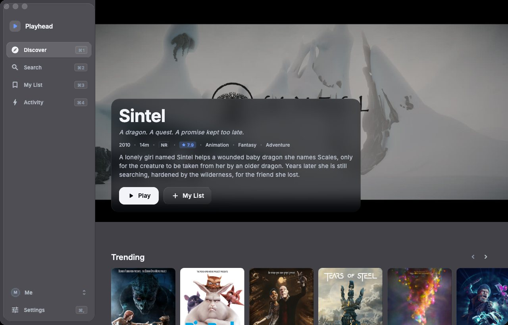
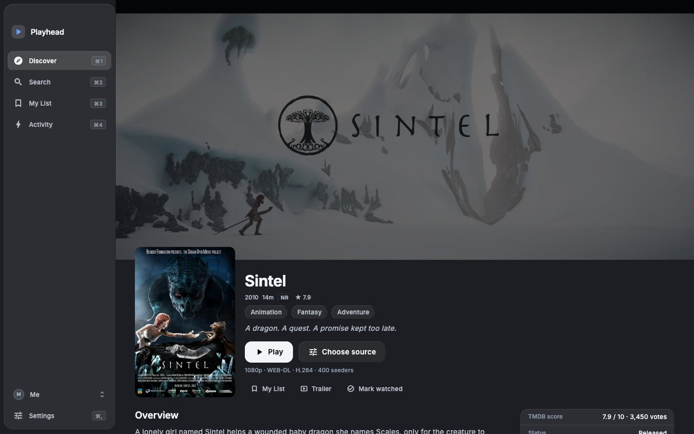
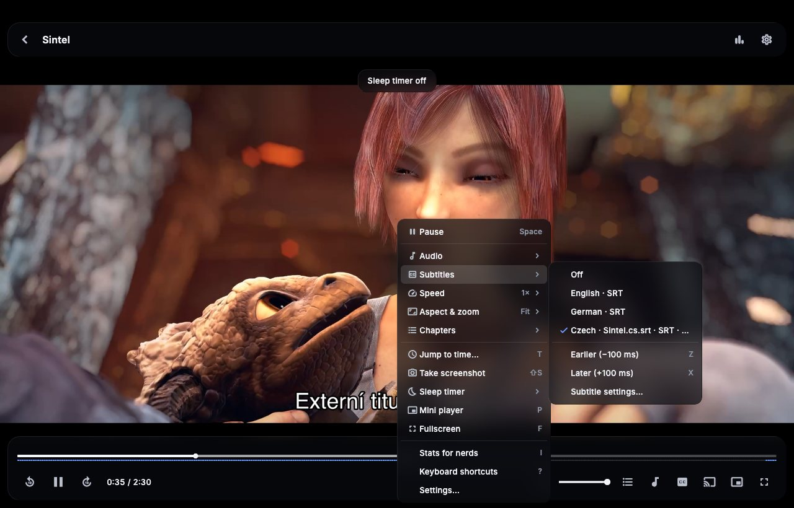

Play while it downloads.
No login. No server. No data collection. Everything runs on your computer.
Playhead streams a torrent's video in playback order through a small, bounded cache and plays it in a native player. When a source stalls it switches to the next one on its own.
Private by design
No login
No account and no sign-up. Open the app and browse; the movie and series catalogue is built in.
No server
Nothing to host or run: no media server, no Prowlarr or Jackett. The indexer engine, the streamer and the player are all inside the app.
No data collection
No analytics, no tracking, no telemetry. Playhead has no servers of its own, so there is nowhere for your data to go.
Edge only
Search, source ranking, streaming and playback run on your computer. Profiles, watch history and lists stay there too.
What leaves your computer: requests to The Movie Database for posters and details, searches to the Internet Archive and to any sources you add, indexer definitions from GitHub when you add an indexer, a check for a new version at launch and once a day, and BitTorrent traffic while you watch. Nothing else. The version check downloads one small static file from this site — no account, no identifiers, no analytics — and can be turned off in Settings → About → Updates.

- Open the DMG and drag Playhead into Applications, then open it. macOS says it can't verify it — click Done.
- Open System Settings → Privacy & Security, scroll down to "Playhead was blocked" and click Open Anyway.
- Confirm with your password or Touch ID. You only do this once.
After that, Playhead updates itself: when a new build is out it shows what changed and installs it with one click.
What it does
Starts in about a second
Downloads the pieces just ahead of the playhead, so a good source starts playing almost at once, and seeks land in a few seconds.
Bounded disk use
Keeps a fixed-size cache (1 GB by default) no matter how big the file is, and removes it when you stop.
Picks the best source
Out of the box it plays public-domain films from the Internet Archive; other sources and indexers are yours to add, with no server to run. Releases are ranked by quality and their swarms checked live before playing; if one dies mid-film Playhead switches to the next.
A proper player
Hardware decoding, subtitles (SRT, ASS, PGS) with styling, audio and subtitle delay, chapters, mini player, keyboard shortcuts.
Rich details
Details for movies and series from The Movie Database: cast, crew, facts, trailers and collections. No setup needed.
Profiles
Separate watch history and lists per person, a guest mode, export to a file and sync between Macs through a folder.


Help and feedback
Read the docs for setup and tips. Found a bug or want something? Open an issue — include the version from Settings → About and what you clicked.